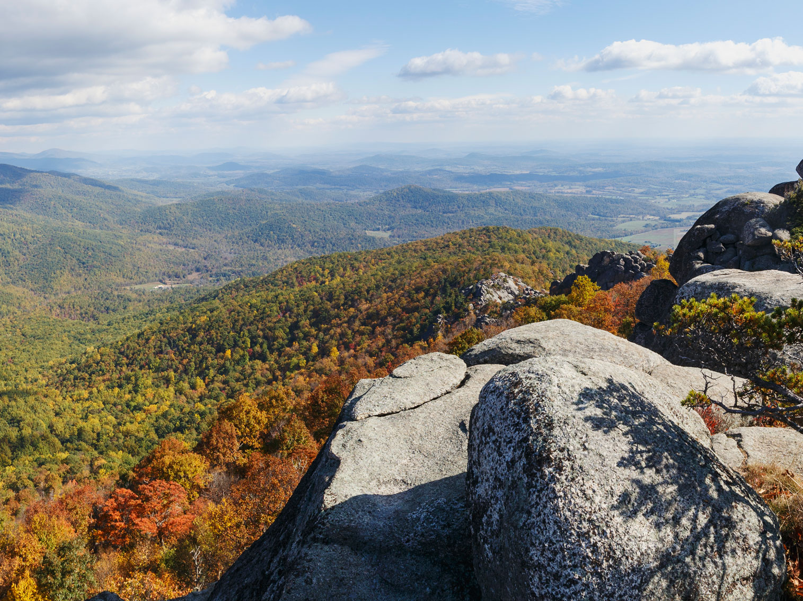

Virginia Travel Guide
Explore historic Williamsburg and Richmond, hike the Blue Ridge Mountains, and relax on Virginia Beach's shores along the scenic Chesapeake Bay.
Places to See in Virginia
.jpg){kind=link}
Historic Triangle★
Region encompassing Jamestown, Williamsburg, and Yorktown. These sites are located within a 25-mile radius and offer visitors a unique opportunity to explore the rich history of early America. Jamestown, established in 1607, was the first permanent English settlement in North America. Williamsburg served as the capital of the Colony of Virginia from 1699 to 1780 and is now a living history museum. Yorktown is famous for being the site of the last major battle of the American Revolutionary War in 1781, where General Cornwallis surrendered to General George Washington. Together, these three sites provide a comprehensive look at the early colonial period and the fight for American independence.
Steven Udvay Air and Space Museum

Shenandoah National Park from Virginia, Public domain, via Wikimedia Commons; Image Size Adjusted
.jpg){kind=link}
Shenandoah National Park★
Blue Ridge park encompassing 200,000 acres of forest, trails, waterfalls & Skyline Drive vistas
Overview
Virginia is a Southeastern state of about 8.7 million people and one of the original 13 colonies, with an exceptional concentration of American history. Richmond is the capital, Virginia Beach is the most populous city, and the state is nicknamed the "Old Dominion" and "Mother of Presidents."
Visitors come for the Colonial Williamsburg, Jamestown, and Yorktown sites of the Historic Triangle, the homes of Washington, Jefferson, and Madison at Mount Vernon and Monticello, and the Civil War battlefields. Others come for the Blue Ridge and Shenandoah National Park, the beaches at Virginia Beach, and the wine country around Charlottesville.
Geography
Virginia stretches from the Atlantic coast and the Chesapeake Bay in the east to the Appalachian Mountains in the west. The Tidewater is low and flat, with estuaries and the Eastern Shore, the Piedmont rises in rolling hills, and the Blue Ridge, Shenandoah Valley, and Ridge-and-Valley region run southwest. Mount Rogers, at 5,729 feet (1,746 m), is the highest point. The James, Potomac, Rappahannock, and York Rivers flow into the Chesapeake Bay.
History
Powhatan, Monacan, Cherokee, and other peoples lived here when the English founded Jamestown in 1607, the first permanent English settlement in North America. Tobacco and enslaved labor built the colony, and Virginia produced Washington, Jefferson, Madison, and Monroe in the Revolution. Virginia became the 10th state in 1788 and the Confederate capital was Richmond, with more battles fought in Virginia than any other state. The war ended at Appomattox in 1865, and Virginia is now home to the Pentagon, CIA, and Norfolk Naval Station.
Historic Triangle
The Historic Triangle links three sites of early American history on the Virginia Peninsula: Jamestown, Williamsburg, and Yorktown, connected by the scenic Colonial Parkway. Jamestown is the site of the first permanent English settlement in 1607, and Colonial Williamsburg is a restored 18th-century capital where costumed interpreters, trades, and taverns bring the era to life. Yorktown is where the British surrendered in 1781, effectively ending the Revolutionary War, and the College of William & Mary is the second-oldest college in the country.
Shenandoah National Park
Shenandoah National Park protects a long stretch of the Blue Ridge Mountains in northern Virginia, about 75 miles from Washington, D.C. The 105-mile Skyline Drive runs along the ridge with more than 70 overlooks, and more than 500 miles of trails include the Appalachian Trail, waterfalls such as Dark Hollow Falls, and the rocky scramble up Old Rag. Fall foliage in October is the busiest time, and nearby Luray Caverns is a popular stop.
Richmond
Richmond is the state capital, on the James River, and was the capital of the Confederacy during the Civil War. Visitors tour the Virginia State Capitol, designed by Thomas Jefferson, the American Civil War Museum, and St. John's Church, where Patrick Henry gave his "Give me liberty" speech. The Virginia Museum of Fine Arts, Maymont estate, and the whitewater and trails of Belle Isle add art and outdoor options, and the city has a strong craft beer and restaurant scene.
Norfolk and Virginia Beach
The Hampton Roads coast combines naval history with seaside recreation. Norfolk is home to the largest naval base in the world, with the battleship Wisconsin at Nauticus, the Chrysler Museum of Art, and the waterfront at Town Point Park. To the east, Virginia Beach has about 35 miles of beaches and a lively Oceanfront Boardwalk, along with First Landing State Park, the Cape Henry Lighthouse, and the Virginia Aquarium. Summer is the peak season.
National Protected Areas
Virginia has many national park sites. Shenandoah National Park is known for Skyline Drive and the Appalachian Trail, and the Blue Ridge Parkway begins at its southern end. Appomattox Court House marks the end of the Civil War, Great Falls Park is on the Potomac, and Colonial National Historical Park protects Jamestown and Yorktown. Manassas, Fredericksburg and Spotsylvania, and Petersburg are Civil War battlefields, and Arlington House and the George Washington Memorial Parkway are in northern Virginia.
State Parks and Historic Sites
Virginia's state parks include Natural Bridge, a 215-foot limestone arch, Grayson Highlands, known for wild ponies, Seven Bends, Douthat, and First Landing on the coast. McAfee Knob is among the most photographed spots on the Appalachian Trail, and Humpback Rocks offers a Blue Ridge view. Mount Vernon and Monticello are preserved historic estates, and the Udvar-Hazy Center houses the Space Shuttle Discovery.
Seasons and When to Visit
Spring and fall are the best times to visit, with dogwood and redbud blooms in April and brilliant foliage in the Blue Ridge in October. Summer is hot and humid in the Tidewater but pleasant in the mountains, and is the peak beach season. Winter is mild on the coast, with snow in the mountains, and Colonial Williamsburg has holiday decorations in December. Hurricane season runs June through November.
This article uses material from the Wikipedia article "Virginia", which is released under the Creative Commons Attribution-Share-Alike License 3.0. Additional information was drawn from National Park Service, Virginia State Parks, and Virginia Tourism.